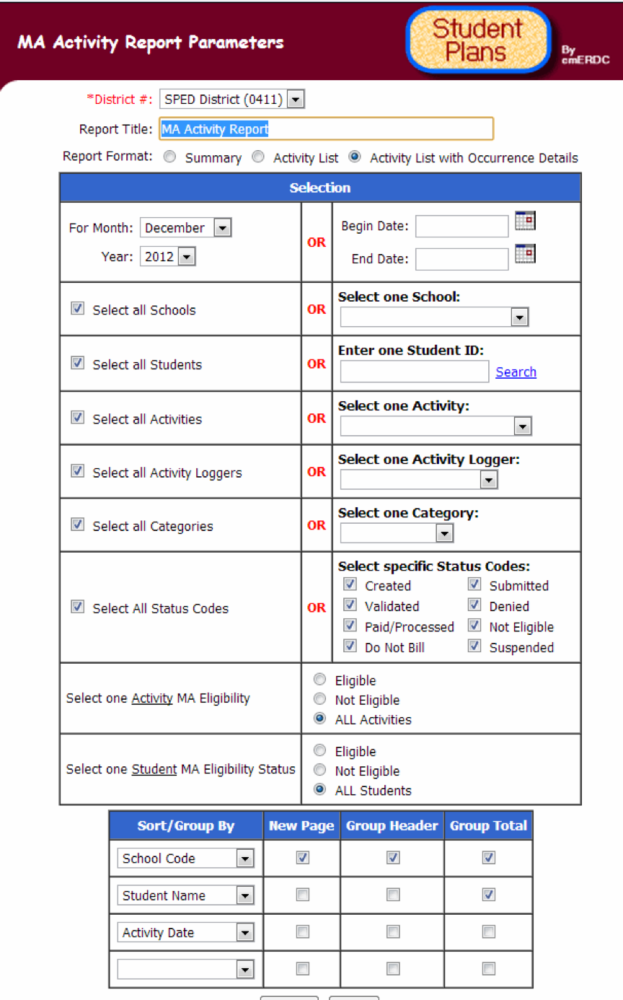

<!-multiPanelCss-->
<div class='panelBlock'>
<div class='annotationPanel'>
	All Student Plans reports have the flexibility to print the data you need as you need it, with a variety of selection, sort and print parameters
</div>
	
</div>
